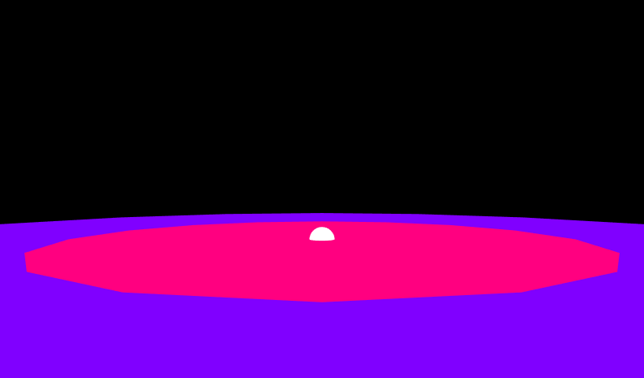

|

|
The Sound node controls the stereo 3D spatialization of sound playback by a child AudioClip or MovieTexture node.
Sounds can be triggered by viewer actions: clicks, horn honks, door latch noises, etc.
Sounds can also be continuous in the background: wind, crowd noises, elevator music.
Sounds emit from a location, in a direction, and within an ellipsoidal volume.
A Sound node describes a sound emitter, where a source node provides the sound and range fields describe the sound region.
An AudioClip node or a MovieTexture node describe a sound source, where a url points to the sound file.
AudioClip also controls playback by start time, stop time, and (optionally) looping.
These X3D scenes are adapted directly from the
original VRML 2.0 Sourcebook chapter examples.
Also available:
Introduction to VRML97 SIGGRAPH98 course notes.
|